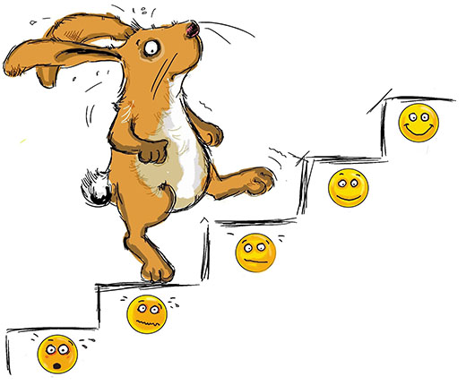

Die kiba-studie - Infos für Eltern
Hier erfahren Sie, wie die KibA-Studie abläuft. Sie teilt sich in
zwei Teile auf:
1. Die
Therapiestudie, bei der insgesamt 400 Kinder mit
Angststörungen mit
kognitiver Verhaltenstherapie behandelt werden.
2. Die
Laborstudie, in der vor und nach der Behandlung mit
Hilfe von Computeraufgaben
verschiedene körperliche und emotionale Reaktionen gemessen werden.

Wie läuft die
Therapiestudie ab?
Die Therapiestudie umfasst eine ausführliche
Diagnostikphase,
die anschließende Behandlungsphase sowie eine Untersuchung nach
Abschluss der Behandlung.
In der Diagnostikphase möchten wir zunächst in
mehreren Gesprächsterminen die Familie und das Angstproblem kennen
lernen und verstehen. Liegt eine Angststörung (Trennungsangst,
Spezifische Phobie, Soziale Angst) vor, kann eine Behandlung im
Rahmen des Forschungsprojekts erfolgen.
Nach einer Wartezeit von ca. 4 Wochen beginnt
dann die Behandlungsphase. In unserer Studie vergleichen wir zwei
Varianten der kognitiven Verhaltenstherapie miteinander.
Die kognitive Verhaltenstherapie...
• hat sich in der Behandlung von Ängsten bei Kindern in vielen
Studien und im
Therapiealltag als sehr effektiv herausgestellt.
• hat zum Ziel, in kindgerechter Weise, die
Gedanken und Verhaltensweisen
von Kindern in den als beängstigend erlebten Situationen zu verändern und
dadurch einen Abbau
starker Angstreaktionen zu erreichen.
In unserer Studie werden zwei Varianten der
Therapie miteinander verglichen, die sich beide in der Vergangenheit
als effektiv herausgestellt haben:
Variante 1: Alle Therapiesitzungen finden
ausschließlich mit dem Kind alleine statt.
Variante
2: Alle Therapiesitzungen finden mit Kind und Eltern gemeinsam statt.
In beiden Behandlungsbedingungen werden 16 Therapiesitzungen von
speziell dafür ausgebildeten und erfahrenen Therapeuten
durchgeführt. Die Entscheidung, welche Variante durchgeführt wird,
erfolgt per Zufall nach einem vor der Studie festgelegten Plan.

Nach Behandlungsende, sowie sechs Monate nach Ende der Behandlung
werden dann
Nachuntersuchungen
durchgeführt, damit wir zuverlässig und seriös die
Wirksamkeit der beiden Behandlungsvarianten überprüfen können.

Die
Laborstudie
In der Laborstudie werden mit Hilfe von zwei Computeraufgaben,
körperliche und emotionale Reaktionen auf unangenehme Reize
gemessen. Dazu messen wir mit Hilfe von Oberflächensensoren
verschiedene Körperreaktionen wie zum Beispiel den Herzschlag oder
den Lidschlussreflex des Auges.
In der ersten Aufgabe erkunden die Kinder mit einer Computerbrille
mehrere Räume in einer virtuellen Welt. In der zweiten Aufgabe sehen
sie verschiedene Bilder von Gesichtern. In beiden Aufgaben wird an
bestimmten Stellen ein unangenehmes Geräusch zu hören sein. Dabei
interessiert uns besonders wie bestimmte Räume oder Bilder mit dem
Geräusch verknüpft werden und wie der Körper darauf reagiert.